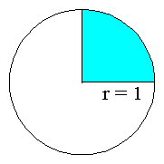
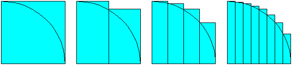
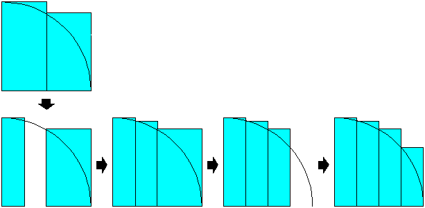

|
The Slices of Pi applet, included below, demonstrates a Java virtual machine executing a sequence of bytecodes that calculates pi. This applet is described in Appendix D, "Slices of Pi: A Simulation of the Java Virtual Machine", of Inside the Java 2 Virtual Machine.
The bytecode sequence in the simulation was generated by javac for the calculatePi() method of the PiCalculator class shown below:
// On CD-ROM in file pi/ex1/PiCalculator.java
class PiCalculator {
static void calculatePi() {
double pi = 4.0;
double sliceWidth = 0.5;
double y;
int iterations = 1;
for (;;) {
double x = 0.0;
while (x < 1.0) {
y = Math.sqrt(1 - (x * x));
pi -= 4 * (sliceWidth * y);
x += sliceWidth;
y = Math.sqrt(1 - (x * x));
pi += 4 * (sliceWidth * y);
x += sliceWidth;
}
++iterations;
sliceWidth /= 2;
}
}
}
The Algorithm
The calculatePi() method loops forever in an attempt to find and capture the elusive pi, the ratio of the circumference of a circle to its diameter. To calculate pi, the calculatePi() method tries to determine the area of a circle that has a radius of one. Because the circle has a radius of one, the circle's area is pi itself.
To determine the area of the circle with radius one, the calculatePi() method works to find the area of one fourth of the circle, then multiplies that area by four to get pi. Here's a diagram of a circle with the area that calculatePi() focuses on shown in blue:

To find the area of the portion of the circle shown in blue in the diagram above, the calculatePi() method slices the area up into progressively smaller rectangular segments, as shown in the diagram below:

Because calculating the area of a rectangle is a piece of cake (or in this case, a slice of pi), the calculatePi() method is able to approximate pi by calculating and summing the areas of the rectangles, then multiplying the result by four. As you can see from the above diagram, this approach to calculating pi will always yield an approximation of pi that is too large. As the rectangles get thinner and more numerous, the approximation will get closer and closer to the real pi.
The calculatePi() method works by making repeated passes at calculating the area of the quarter circle, with each subsequent pass using a smaller slice width. Each iteration of calculatePi()'s for loop represents one attempt to calculate the area of the quarter circle. For any particular iteration of the for loop, the slicewidth variable gives the x (horizontal) width of the slice, which remains constant during the entire iteration of the for loop. At the end of each for loop iteration, the slice with is halved.
The value of the pi variable keeps a running record of the current approximation of pi. Each pass of calculatePi()'s for loop starts by initializing the x local variable to 0.0, then incrementing x by slicewidth until x reaches the end of the circle's radius at 1.0.
The while loop that is contained inside the for loop iterates once for every two slice widths. In effect, each iteration of the while loop takes a large rectangle from the previous iteration of the for loop, discards half of the large rectangle's area, and calculates a new value for the discarded portion. Because the slice width is halved at the end of each iteration of the for loop, the width of the rectangles calculated by the previous iteration of the for loop is always twice as wide as the slice width of the current iteration. Here is a diagram showing the steps the calculatePi() method takes to divide two rectangles into four:

The Results of the Algorithm
For a better idea of what kind of results you can expect from the calculatePi() method, consider this close cousin to the PiCalculator class:
// On CD-ROM in file pi/ex1/PiCalculatorPrinter.java
class PiCalculatorPrinter {
static void calculateAndPrintPi() {
double pi = 4.0;
double sliceWidth = 0.5;
double y;
int iterations = 1;
for (;;) {
double x = 0.0;
while (x < 1.0) {
y = Math.sqrt(1 - (x * x));
pi -= 4 * (sliceWidth * y);
x += sliceWidth;
y = Math.sqrt(1 - (x * x));
pi += 4 * (sliceWidth * y);
x += sliceWidth;
}
System.out.println(iterations + ": " + pi);
++iterations;
sliceWidth /= 2;
}
}
public static void main(String[] args) {
calculateAndPrintPi();
}
}
The PiCalculatorPrinter.calculateAndPrintPi() method uses the same algorithm to calculate pi as the PiCalculator.calculatePi() method, but along the way calculateAndPrintPi() reports its progress to the standard output. Here is the output of PiCalculatorPrinter, when it is run as a Java application and left to work for a while:
1: 3.732050807568877
2: 3.4957090681024408
3: 3.339819144357174
4: 3.248253037827741
5: 3.1976024228771323
6: 3.170546912779685
7: 3.156405792396616
8: 3.1491180829572345
9: 3.145397402719659
10: 3.143509891539023
11: 3.1425565279114656
12: 3.1420764488577837
13: 3.1418352081747196
14: 3.1417141631514287
15: 3.141653490490536
16: 3.141623101073998
17: 3.1416078875969236
18: 3.1416002742226636
19: 3.141596465189377
20: 3.1415945598432646
21: 3.141593606876806
22: 3.1415931302901634
23: 3.1415928919598097
24: 3.1415927727818502
25: 3.1415927131888464
26: 3.1415926833899084
27: 3.141592668491482
28: 3.1415926610412166
29: 3.1415926573154693
The value of the static final PI field of class java.lang.Math, which is the double value that is closer than any other to the real value of pi, is 3.14159265358979323846. As you can see from the above output, after 29 iterations of the for loop, the algorithm has generated the first 9 significant decimal digits of pi: 3.14159265. As expected, all the approximations of pi are greater than the real value. The algorithm is approaching the real value of pi from above.
The Bytecodes
The bytecodes generated by javac for the calculatePi() method are shown below:
// Push dual-byte value from constant pool entry
// In this case, a double 4.0
0 ldc2_w #10
3 dstore_0 // Pop double, store into local variables 0 and 1:
// double pi = 4;
// Push dual-byte value from constant pool entry
// In this case, a double 0.5
4 ldc2_w #6
7 dstore_2 // Pop double, store into local variables 2 and 3:
// double slicewidth = 0.5;
8 iconst_1 // Push int constant 1
9 istore 6 // Pop int, store into local variable 6:
// int iterations = 1;
11 dconst_0 // Push double constant 0.0
12 dstore 7 // Pop double, store into local variables 7 and 8:
// double x = 0.0;
14 goto 75 // Jump to offset 75
17 dconst_1 // Push double constant 1.0
18 dload 7 // Push double from local variables 7 and 8 (x)
20 dload 7 // Push double from local variables 7 and 8 (x)
// Pop two doubles, multiply them, push double
22 dmul // result
// Pop two doubles, subtract them, push double
23 dsub // result
// Invoke the static method indicated by the
// constant entry, in this case Math.sqrt(double),
// which pops a double parameter and pushes a
// double return value
24 invokestatic #5
// Pop double, store into local variables 4 and 5:
27 dstore 4 // y = Math.sqrt(1 - (x * x));
29 dload_0 // Push double from local variables 0 and 1 (pi)
// Push dual-byte value from constant pool entry
// In this case, a double 4.0
30 ldc2_w #10
// Push double from local variables 2 and 3
33 dload_2 // (slicewidth)
34 dload 4 // Push double from local variables 4 and 5 (y)
// Pop two doubles, multiply them, push double
36 dmul // result
// Pop two doubles, multiply them, push double
37 dmul // result
// Pop two doubles, subtract them, push double
38 dsub // result
// Pop double, store into local variables 0 and 1:
39 dstore_0 // pi -= 4 * (slicewidth * y);
40 dload 7 // Push double from local variables 7 and 8 (x)
// Push double from local variables 2 and 3
42 dload_2 // (slicewidth)
43 dadd // Pop two doubles, add them, push double result
// Pop double, store into local variables 7 and 8:
44 dstore 7 // x += slicewidth;
46 dconst_1 // Push double constant 1.0
47 dload 7 // Push double from local variables 7 and 8 (x)
49 dload 7 // Push double from local variables 7 and 8 (x)
// Pop two doubles, multiply them, push double
51 dmul // result
// Pop two doubles, subtract them, push double
52 dsub // result
// Invoke the static method indicated by the
// constant entry, in this case Math.sqrt(double),
// which pops a double parameter and pushes a
// double return value
53 invokestatic #5
// Pop double, store into local variables 4 and 5:
56 dstore 4 // y = Math.sqrt(1 - (x * x));
58 dload_0 // Push double from local variables 0 and 1 (pi)
// Push dual-byte value from constant pool entry
// In this case, a double 4.0
59 ldc2_w #10
// Push double from local variables 2 and 3
62 dload_2 // (slicewidth)
63 dload 4 // Push double from local variables 4 and 5 (y)
// Pop two doubles, multiply them, push double
65 dmul // result
// Pop two doubles, multiply them, push double
66 dmul // result
67 dadd // Pop two doubles, add them, push double result
// Pop double, store into local variables 0 and 1:
68 dstore_0 // pi += 4 * (slicewidth * y);
69 dload 7 // Push double from local variables 7 and 8 (x)
// Push double from local variables 2 and 3
71 dload_2 // (slicewidth)
72 dadd // Pop two doubles, add them, push double result
// Pop double, store into local variables 7 and 8:
73 dstore 7 // x += slicewidth;
75 dload 7 // Push double from local variables 7 and 8 (x)
77 dconst_1 // Push double constant 1.0
78 dcmpg // Pop two doubles, compare them, push int result
// Pop int, branch if less than zero to offset 17:
79 iflt 17 // while (x < 1.0) {}
82 iinc 6 1 // Increment local variable 6 by 1: ++iterations;
// Push double from local variables 2 and 3
85 dload_2 // (slicewidth)
// Push dual-byte value from constant pool entry
// In this case, a double 2.0
86 ldc2_w #8
// Pop two doubles, divide them, push double
89 ddiv // result
// Pop double, store into local variables 2 and 3:
90 dstore_2 // slicewidth /= 2;
91 goto 11 // Jump unconditionally to offset 11: for(;;) {}
Note that the calculatePi() method includes a few good demonstrations of the way in which the Java virtual machine calculates larger expressions using the operand stack. To calculate the "pi -= 4 * (slicewidth * y);" expression, for example, the Java virtual machine pushes all four values (pi, 4.0, slicewidth, and y) onto the operand stack, then performs two multiply instructions and a subtract, finally storing the result into the pi local variable. In addition, to calculate "(1 - (x * x))", the Java virtual machine pushes all three values (1, x, and x) onto the operand stack, then performs a multiply and a subtract.
The Trouble with double
The calculatePi() method has two major problems. First, it takes a long time to get even a few significant digits of pi. Its inherent slowness is compounded by the fact that it is running in a simulated Java virtual machine that only executes about two instructions a second.
The other major problem with the calculatePi() method is that it doesn't deal with rounding errors. Although the calculatePi() method will indeed execute forever, eventually the sliceWidth /= 2; statement will cause the value of sliceWidth to underflow to zero. After that, the value of the pi variable will never change, but its value won't be equal to Math.PI because of rounding errors that accumulate prior to the pi variable reaching its final value.
Despite these problems, the calculatePi() method does serve as a good example of the Java virtual machine operating on doubles and calculating larger expressions.
Running the Applet
As you run the simulation, you can monitor the progress of the calculatePi() method by watching the local variables portion of the stack frame. The local variables of calculatePi() were arranged by the javac compiler into the local variable slots of the stack frame as follows:
| local variable | slot(s) |
|---|
pi | 0 and 1 |
slicewidth | 2 and 3 |
y | 4 and 5 |
iterations | 6 |
x | 7 and 8 |
To drive the Slices of Pi simulation, use the Step, Reset, Run, and Stop buttons. Each time you press the Step button, the simulator will execute the instruction pointed to by the pc register. If you press the Run button, the simulation will continue with no further coaxing on your part until you press the Stop button. To start the simulation over, press the Reset button. Happy clicking.
Click here to view a page of links to the source code of the Slices of Pi applet.
|